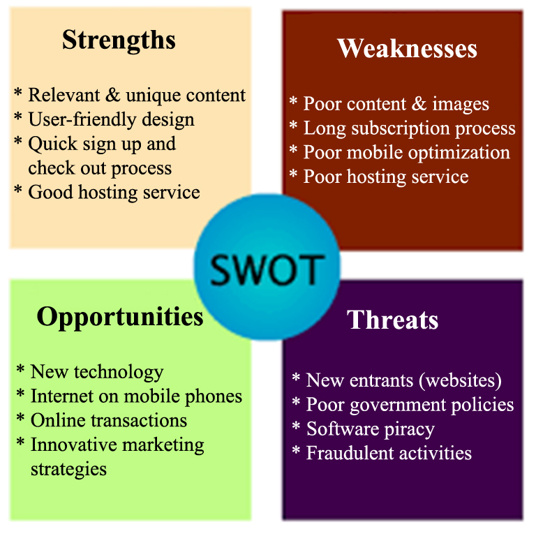

Final Project
Webflow
Creative Brief
- What is this project?
- Who is it for?
- Why are we doing it?
- What needs to be done? By whom? By when?
- Where and how will it be used?
The 10 most important things to include in a creative brief.
- Background Summary: Who is the client? What is the product or service? What are the strengths, weaknesses, opportunities and threats (or SWOTs) involved with this product or service? Are there existing research, reports and other documents that help you understand the situation?.
- Overview: What is the project? What are we designing and why? Why do we need this project? What’s the opportunity?
- Drivers: What is our goal for this project? What are we trying to achieve? What is the purpose of our work? What are our top three objectives?
- Audience: Who are we talking to? What do they think of us? Why should they care?
- Competitors: Who is the competition? What are they telling the audience that we should be telling them? SWOT analysis on them? What differentiates us from them?
- Tone: How should we be communicating? What adjectives describe the feeling or approach?
- Message: What are we saying with this piece exactly? Are the words already developed or do we need to develop them? What do we want audiences to take away?
- Visuals: Are we developing new images or picking up existing ones? If we are creating them, who/what/where are we photographing or illustrating? And why?
- Details: Any mandatory information that must be included? List of deliverables? Preconceived ideas? Format parameters? Limitations and restrictions? Timeline, schedule, budget?
- People: Who are we reporting to? Who exactly is approving this work? Who needs to be informed of our progress? By what means?
SWOT Analysis for a website
Image credit

Strengths
Advantages that are not present in the sites of your competitors.
Weaknesses
The features of your website that slow down your progress or prevent you from achieving your objectives and goal.
Opportunities
External elements you can take advantage of to achieve your website goals.
Threats
External factors that may prevent a site from achieving its objectives and goals.
SWOT Analysis for a Person or Service
Strengths
- What do you do better than anyone else?
- List Education, skills, talents, certifications and connections that give you an advantage.
- What do people praise you for?
- Which achievements are you proud of?
- Are you part of a network that no one else is involved in?
- What values or ethics do you have that sets you apart?
Weaknesses
- Which skills or education are you lacking?
- List areas where you don't feel confident enough.
- What will the people around you see as your weaknesses?
- Do you have personality traits that hold you back in your field?
SWOT Analysis of a Person or Service
Opportunities
- What trends are affecting your industry?
- How can you implement these changing trends to what you do?
- How could new technology help you advance?
- Do you have any networking opportunities?
Threats
- A threat is an external factor you can't control, unlike a weakness which is under your control.
- Who are you competing against?
- Are there external changes that can affect you?
- Is the market changing?